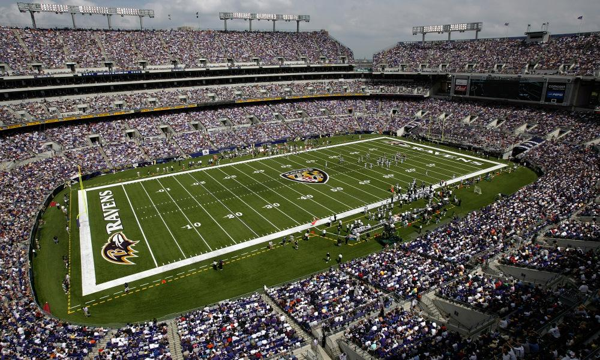

Baltimore Raven |
|
Mejores Jugadas |
Quienes son?Los Baltimore Ravens (en español, Cuervos de Baltimore) son un equipo profesional de fútbol americano de los Estados Unidos con sede en Baltimore, Maryland. Compiten en la División Norte de la Conferencia Americana (AFC) de la National Football League (NFL) y disputan sus partidos como locales en el M&T Bank Stadium. El equipo fue fundado en 1996, cuando Art Modell anunció el traslado de los Cleveland Browns a Baltimore. Sin embargo, como parte de un acuerdo entre la NFL y la ciudad ohaiana, la historia de los Browns permaneció en Cleveland y los Ravens fueron considerados como un equipo de expansión. A lo largo de su historia, los Ravens han ganado un total de dos Super Bowls, dos títulos de conferencia y seis títulos de división. De acuerdo con la revista Forbes, los Baltimore Ravens son el trigésimo segundo club deportivo más valioso del mundo y el decimosexto de la NFL con un valor estimado de 2.975 millones de dólares. |
Estadio local de Baltimore |
|
|  | |
Equipo |
|
Historia del equipoTras una controversia en la relocalización de la franquicia de Cleveland, ciudad que se quedó con los derechos del equipo, los colores y nombre entre otras cosas, el equipo propiedad de Art Modell se trasladó a Baltimore solamente con los jugadores contratados. Así surge un nuevo equipo, una franquicia de expansión como lo estipula el reglamento de la liga.2El nombre del equipo se inspiró en el poema El cuervo de Edgar Allan Poe, quien vivió un tiempo en Baltimore, murió y fue enterrado allí en 1849. El primer entrenador contratado por Modell fue Ted Marchibroda, quien había sido entrenador de los Baltimore Colts previo a su partida hacia Indianna. En esa primera temporada, la temporada 1996-97, fueron locales en el Baltimore Memorial Stadium y participaron dentro de la AFC en el grupo AFC Central. En dicha temporada quedaron fuera de los play-offs con un registro de 4 victorias y 12 derrotas. En la siguiente temporada mejoraron sus resultados previos, ganando 6, empatando 1 y perdiendo 9 pero aun así no avanzaron de fase. En su tercer temporada, el equipo se traslada a un nuevo estadio, el M&T Bank Stadium. También mejoran su posición en la AFC Central, pasando al penúltimo lugar con 6 victorias y 10 derrotas. |
|